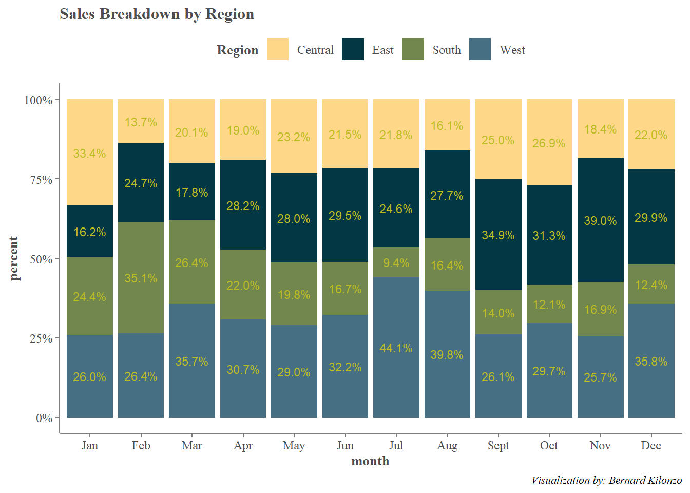
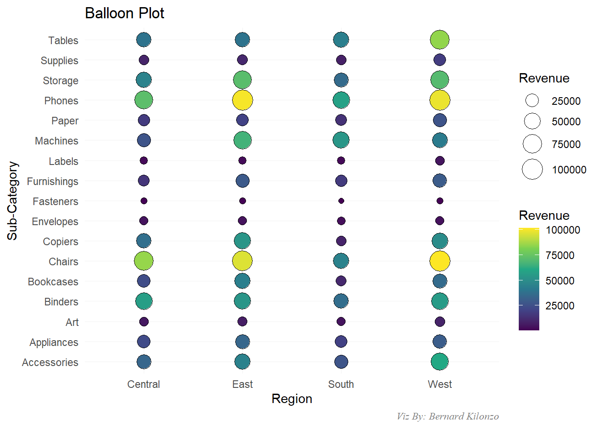
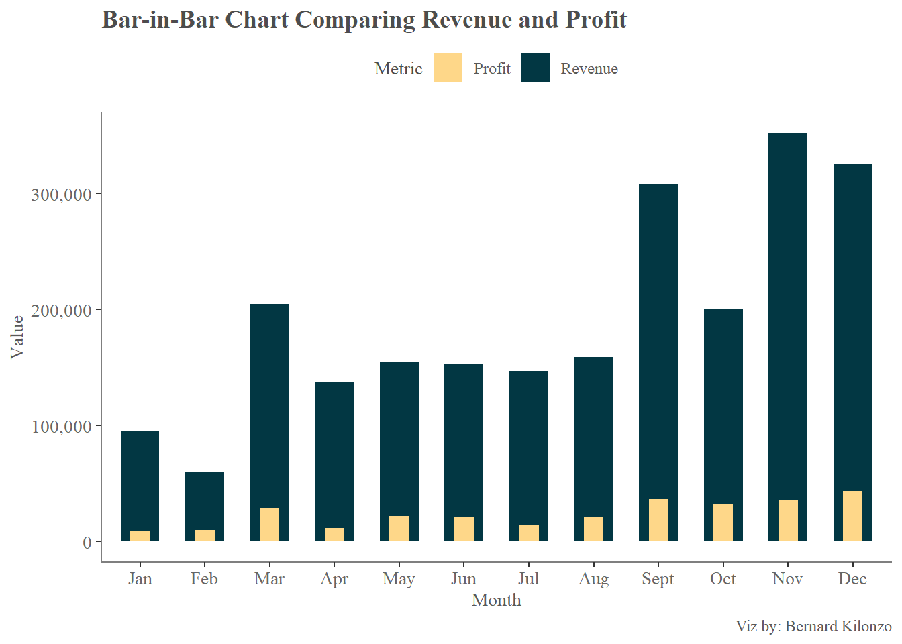

Show the code
library(tidyverse)
library(paletteer)
library(scales)This document demonstrates how you can format your Quarto documents/presentation to make them presentable to your users. Information shared in this document is purely for demonstration purpose and therefore doesn’t authoritatively suggest anything about the subject.
This section loads all the required libraries for this analysis.
library(tidyverse)
library(paletteer)
library(scales)This section loads Sample - Superstore data set used in this document.
superstore<-read.csv("https://raw.githubusercontent.com/bernardkilonzo-rigor/dataviz/main/data/Sample%20-%20Superstore.csv")This section showcases the revenue generated by Month and Region as a stacked bar chart.
#modify the data
#add a column that computes month as a string
superstore<-superstore%>%mutate(month=month(Order.Date, label =TRUE))
#compute sales proportion by region and month
Prtions<-superstore%>%group_by(month, Region)%>%
summarise(sales = sum(Sales))%>%
mutate(pr=sales/sum(sales))%>%
mutate(percent=formattable::percent(pr, digits=1))
#create 100% stacked bar chart
Prtions%>%ggplot(aes(x =month, y = percent, fill =Region))+
geom_bar(stat = "identity", position = "stack")+
scale_y_continuous(labels = percent_format())+
scale_fill_paletteer_d("nationalparkcolors::Acadia")+
labs(title = "Revenue Breakdown by Region",
caption = "Visualization by: Bernard Kilonzo")+
geom_text(aes(label = percent),
position = position_stack(vjust = 0.5),
color = "#BCBD22",
size = 3)+
theme(panel.background = element_blank(),
axis.line = element_line(color = "gray50"),
axis.ticks = element_line(color = "gray50"),
axis.text = element_text(family = "serif", size = 9, color = "gray30"),
axis.title = element_text(family = "serif", face = "bold", size = 10, color = "gray30"),
legend.title = element_text(family = "serif", face = "bold", size = 10, color = "gray30"),
legend.text = element_text(family = "serif", size = 9, color = "gray30"),
legend.position = "top",
plot.title = element_text(family = "serif", face = "bold", size = 12, color = "gray30"),
plot.caption = element_text(family = "serif", face = "italic", size = 8),
)
#preparing data set
computed_dat<-superstore%>%
group_by(Region, Sub.Category)%>%
summarise(sales = sum(Sales))
#creating a balloon plot with ggplot2
computed_dat%>%ggplot(aes(x = Region, y = Sub.Category))+
geom_point(aes(size = sales, fill = sales), shape = 21, color = "black")+
scale_size(range = c(2,8))+
scale_fill_viridis_c() +
labs(title = "Balloon Plot", caption = "Viz By: Bernard Kilonzo",
x = "Region",
y = "Sub-Category", size = "Revenue", fill = "Revenue")+
theme_minimal()+
theme(
panel.grid = element_line(color = "gray95", linewidth = 0.1),
plot.caption = element_text(family = "serif", face = "italic", color = "gray50"))
#Extract months as strings
superstore<-superstore%>%mutate(Order.Date =dmy(Order.Date))%>%
mutate(mon = month(Order.Date, label = TRUE))
#Creating bar-in-bar chart comparing Sales and Profit
superstore%>%ggplot(aes(x = mon))+
geom_bar(aes(y = Sales, fill = "Revenue"), stat = "summary", fun =sum, width = 0.6)+
geom_bar(aes(y = Profit, fill = "Profit"), stat = "summary", fun = sum, width = 0.3)+
scale_fill_manual(values = c("Revenue"="#023743", "Profit"="#FED789"))+
scale_y_continuous(labels = comma)+
labs(title = "Bar-in-Bar Chart Comparing Revenue and Profit",
caption = "Viz by: Bernard Kilonzo",
x = "Month", y = "Value", fill = "Metric")+
theme(panel.background = element_blank(),
axis.line = element_line(color = "gray50"),
axis.text = element_text(family = "serif",size = 10,color = "gray40"),
legend.title = element_text(family = "serif",size = 10 ,color = "gray30"),
legend.text = element_text(family = "serif", size = 9, color = "gray35"),
legend.position = "top",
axis.title = element_text(family = "serif", size = 10, color = "gray35"),
plot.title = element_text(family = "serif", face = "bold", size = 14, color = "gray30"),
plot.caption = element_text(family = "serif", size = 9, color = "gray35"))